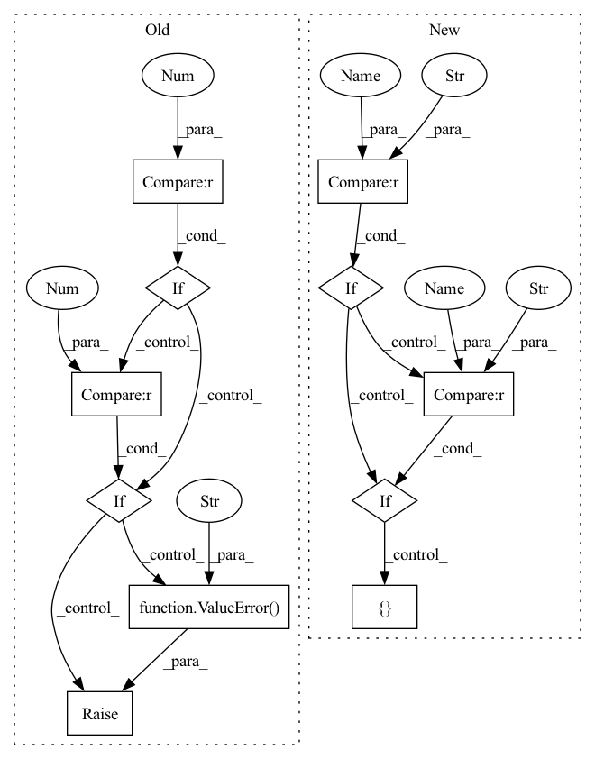

Pattern ID :2054

Before Change
raise ValueError
inverted_residual=InvertedResidual
if len(stages_repeats) != 3:
raise ValueError("expected stages_repeats as list of 3 positive ints")
if len(stages_out_channels) != 5:
raise ValueError("expected stages_out_channels as list of 5 positive ints")
self._stage_out_channels = stages_out_channels
input_channels = 3
output_channels = self._stage_out_channels[0]
After Change
if self.version == "shufflenet-0.5":
self._stage_out_channels = [24, 48, 96, 192, 1024]
self.out_channels = (96, 192)
elif self.version == "shufflenet-1.0":
self._stage_out_channels = [24, 116, 232, 464, 1024]
self.out_channels = (232, 464)
elif self.version == "shufflenet-1.5":
self._stage_out_channels = [24, 176, 352, 704, 1024]
self.out_channels = (352, 704)
elif self.version == "shufflenet-2.0":
self._stage_out_channels = [24, 244, 488, 976, 2048]
In pattern: SUPERPATTERN
Frequency: 3
Non-data size: 11
Instances
Fragment ID: 4992692
Project Name: zhangheng19931123/mutualguide
Commit Name: e34b6b0002f1571fad0fa9bf00707f377f5fc431
Time: 2022-07-01
Author: zhanghengdev@outlook.com
File Name: models/backbone/shufflenet_backbone.py
M Class Name: ShuffleNetBackbone
N Class Name: ShuffleNetBackbone
M Method Name: __init__(3)
N Method Name: __init__(3)
M Parent Class: nn.Module
N Parent Class: nn.Module
M File Name: models/backbone/shufflenet_backbone.py
N File Name: models/backbone/shufflenet_backbone.py
M Start Line: 69
M End Line: 106
N Start Line: 92
N End Line: 136
'>
Before Change
self.out_channels =out_channels
self.dim = dim
if self.dim ==2:
make_conv = ConvNormActive2D
elif dim ==3:
make_conv = ConvNormActive3D
else:
raise ValueError("dim should be 2 or 3")
// 构建projection
if self.out_channels != self.in_channels: // 输入输出channel不一样，则添加projection改变输入通道,用于不同stage的过渡处
self.projection = make_conv(in_channels=self.in_channels,out_channels=self.out_channels)
After Change
def __init__(self, type, in_channels, middle_channels, out_channels, norm="bn", active="relu", gn_c=8, dim=2):
super().__init__()
self.type = type
self.in_channels = in_channels
self.middle_channels = middle_channels
self.out_channels = out_channels
self.dim = dim
If the input/output channels are different,
add projection to alter the input channel for transitions at different stages
if self.out_channels != self.in_channels:
self.projection = MakeConv(in_channels=self.in_channels, out_channels=self.out_channels, kernel_size=1, dim=dim,padding=0)
else:
self.projection = nn.Identity()
// build list
if self.type == "33":
self.conv_list = nn.ModuleList([])
self.conv_list.append(ConvNormActive(in_channels, out_channels, kernel_size=3, norm=norm, active=active, gn_c = gn_c, dim = dim))
self.conv_list.append(ConvNormActive(out_channels, out_channels, kernel_size=3, norm=norm, active="None", gn_c = gn_c, dim = dim))
elif self.type == "131":
self.conv_list = nn.ModuleList([])
self.conv_list.append(ConvNormActive(in_channels, middle_channels, kernel_size=1, norm=norm, active=active, gn_c = gn_c, dim = dim, padding=0))
self.conv_list.append(ConvNormActive(middle_channels, middle_channels, kernel_size=3, norm=norm, active=active, gn_c = gn_c, dim = dim))
self.conv_list.append(ConvNormActive(middle_channels, out_channels, kernel_size=1, norm=norm, active="None", gn_c = gn_c, dim = dim, padding=0))
'>
Fragment ID: 4992690
Project Name: wamawama/wama_modules
Commit Name: b2bf89e72b262002500e8271f984d6f8afac7eb3
Time: 2022-10-25
Author: wmy19970215@gmail.com
File Name: wama_modules/BaseModule.py
M Class Name: ResBlock
N Class Name: ResBlock
M Method Name: __init__(9)
N Method Name: __init__(6)
M Parent Class: nn.Module
N Parent Class: nn.Module
M File Name: wama_modules/BaseModule.py
N File Name: wama_modules/BaseModule.py
M Start Line: 362
M End Line: 384
N Start Line: 357
N End Line: 389
'>
Before Change
raise ValueError
inverted_residual=InvertedResidual
if len(stages_repeats) != 3:
raise ValueError("expected stages_repeats as list of 3 positive ints")
if len(stages_out_channels) != 5:
raise ValueError("expected stages_out_channels as list of 5 positive ints")
self._stage_out_channels = stages_out_channels
input_channels = 3
output_channels = self._stage_out_channels[0]
After Change
class ShuffleNetBackbone(nn.Module):
def __init__(self, version="shufflenet-1.0", pretrained=True):
super(ShuffleNetBackbone, self).__init__()
self.version = version
if self.version == "shufflenet-0.5":
self._stage_out_channels = [24, 48, 96, 192, 1024]
self.out_channels = (96, 192)
elif self.version == "shufflenet-1.0":
self._stage_out_channels = [24, 116, 232, 464, 1024]
self.out_channels = (232, 464)
elif self.version == "shufflenet-1.5":
self._stage_out_channels = [24, 176, 352, 704, 1024]
self.out_channels = (352, 704)
elif self.version == "shufflenet-2.0":
self._stage_out_channels = [24, 244, 488, 976, 2048]
'>
Fragment ID: 4992691
Project Name: zhanghengdev/mutualguide
Commit Name: e34b6b0002f1571fad0fa9bf00707f377f5fc431
Time: 2022-07-01
Author: zhanghengdev@outlook.com
File Name: models/backbone/shufflenet_backbone.py
M Class Name: ShuffleNetBackbone
N Class Name: ShuffleNetBackbone
M Method Name: __init__(3)
N Method Name: __init__(3)
M Parent Class: nn.Module
N Parent Class: nn.Module
M File Name: models/backbone/shufflenet_backbone.py
N File Name: models/backbone/shufflenet_backbone.py
M Start Line: 69
M End Line: 106
N Start Line: 92
N End Line: 136